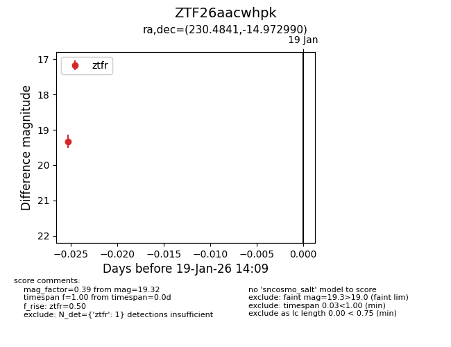
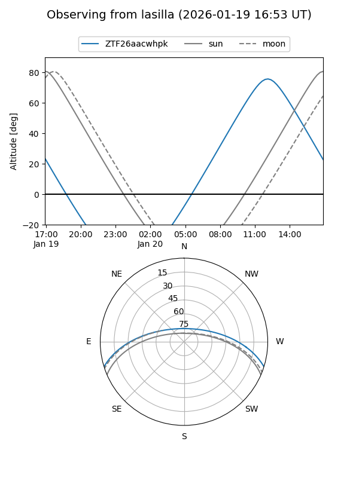

ZTF26aacwhpk
Target ZTF26aacwhpk at 2026-01-19 14:11
Aliases and brokers:
FINK: link
Lasair: link
ALeRCE: link
alt names
ZTF26aacwhpk (ztf,fink_ztf)
Coordinates:
equatorial (ra, dec) = 230.4841,-14.97299
equatorial (HMS+DMS) = 15:21:56.18,-14:58:22.76
galactic (l, b) = (348.4677,+34.27409)
Flags:
Photometry:
last ztfr=19.32
1 ztfr detections
Lightcurve

Visibility


Additional plots